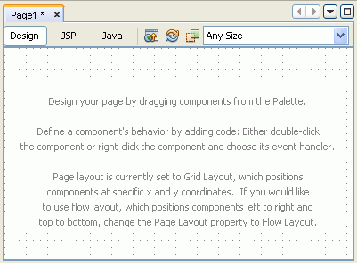

When you have a Visual Web JSF project open, opening a Visual Web JSF page opens the Visual Designer so you can drag components to the page and design it. Other views in this design area are the JSP editor and the Java editor, which you can open by clicking the JSP or Java button in the editor toolbar above the editor. If you are in either of these editors, you can open the Visual Designer by clicking the Design button in the editor toolbar.
